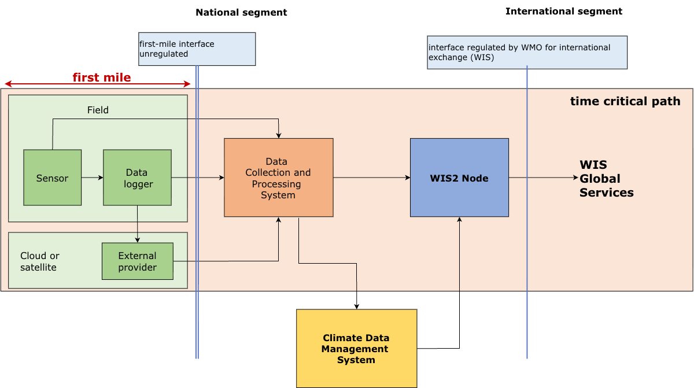
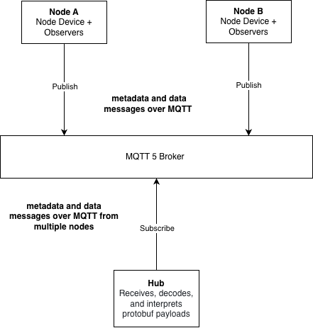

World Meteorological Organization |
Date: 2026-06-30 |
Version: 0.0.1-DRAFT-2026-06-30 |
Document location: TBD |
Document status: DRAFT |
Revision history: see Annex E |
Standing Committee on Information Management and Technology (SC-IMT)[1] |
Commission for Observation, Infrastructure and Information Systems (INFCOM)[2] |
Copyright © 2026 World Meteorological Organization (WMO) |
- 1. Scope
- 2. Conformance
- 3. References
- 4. Terms and definitions
- 5. Conventions
- 6. Overview (informative)
- 7. Message Encoding
- 8. Parameter Standard Names
- 9. Transmission
- Annex A: Conformance Class Abstract Test Suite (Normative)
- Annex B: Schemas (Normative)
- Annex C: Examples (Informative)
- Annex D: Bibliography
- Annex E: Revision History
i. Abstract
WMO regulates the real-time international exchange of observation data to ensure the availability of high-quality observational data for many applications in particular for meteorological and hydrological forecasts, and allowing Prediction Centers (for Numerical Weather Prediction – NWP as well as climate and hydrological prediction) to be able to produce reliable products. National Meteorological and Hydrological Services (NMHSs) use NWP products to monitor and predict the weather and hydrological conditions to issue forecasts and warnings for the protection of the lives and property of citizens against natural hazards, notably in the framework of the Early Warnings for All initiative.
NMHSs operate networks comprising different observing systems to meet the observational data requirements for national, regional and international needs, and to exchange data internationally, in accordance with the WMO technical regulations. Data are collected from the observing platforms, processed and quality controlled before being used nationally and exchanged internationally. WMO does not regulate this initial data collection segment of transmission of data from the observing station to the data collection and processing system (first-mile data collection).
This document defines the encoding and transmission of observation data from remote monitoring stations (Nodes) to a central data collection system (Hub).
ii. Keywords
The following are keywords to be used by search engines and document catalogues.
wmo, observations, first mile, node, hub, protobuf, mqtt
iii. Security Considerations
No security considerations have been made for this standard.
1. Scope
This document defines the encoding and transmission of observation data from remote monitoring stations (Nodes) to a central data collection system (Hub).
This specification defines the conformance requirements for WMO First Mile Data Management (message encoding, parameter standard names, transmission). Annex A defines the abstract test suite.
2. Conformance
Conformance with this standard shall be checked using the tests specified in Annex A (normative) of this document.
WMO First Mile Data Management defines the encoding and transmission of observation data from remote monitoring stations (Nodes) to a central data collection system (Hub).
This standard identifies numerous Requirements Classes which define the functional requirements.
The mandatory Requirements Classes for this specification are:
-
"Message Encoding"
-
"Parameter Standard Names"
-
"Transmission"
3. References
-
Google LLC: Protocol Buffers Documentation (2026) [3]
4. Terms and definitions
This document uses the terms defined in OGC Policy Directive 49, which is based on the ISO/IEC Directives, Part 2, Rules for the structure and drafting of International Standards. In particular, the word “shall” (not “must”) is the verb form used to indicate a requirement to be strictly followed to conform to this Standard and OGC documents do not use the equivalent phrases in the ISO/IEC Directives, Part 2.
This document also uses terms defined in the OGC Standard for Modular specifications (OGC 08-131r3), also known as the 'ModSpec'. The definitions of terms such as standard, specification, requirement, and conformance test are provided in the ModSpec.
The following additional terms and definitions also apply.
Node
Remote station or system that collects observation data and transmits it to a Hub. A Node comprises a Node Device and optionally one or more Observer Devices. Communication is strictly unidirectional; the Node transmits data to the Hub but does not receive data from it.
Hub
Software system at the central server that receives Data and Metadata messages from one or more Nodes, decodes the Protobuf payloads, and prepares the observation data for further processing and distribution. Communication is strictly unidirectional; the Hub receives data from Nodes but does not transmit data to them.
Protocol
The IP based set of rules that determine how data is transferred from the Node to the Hub.
Observation
A single set of one or more measured values captured at a specific point in time, referencing a ParameterDefinition. Observations are transmitted within Data messages.
Metadata
A message type that provides configuration and contextual information about a Node, including descriptions of the Node Device, Observer Devices, parameter definitions, and namespace mappings. The Metadata message provides the necessary context for interpreting Data messages.
Cell method
Statistical method used to aggregate measurements over a cell period. Specified using the CellMethod enumeration. Examples include POINT (instantaneous value), MEAN, MAXIMUM, MINIMUM, and STANDARD_DEVIATION.
Cell period
Duration in seconds over which measurements are aggregated using the cell method. A value of zero indicates an instantaneous (point) measurement with no aggregation interval.
Empty value
Explicit representation of a missing or unavailable measurement. Missing values shall be encoded using the emptyValue element rather than omitted, represented as zero, or represented as false. This ensures a clear distinction between a measurement that could not be obtained and a measurement with a value of zero.
First mile
The transmission path from a remote observation site to the central data collection infrastructure. In bandwidth-constrained environments such as satellite links, the first mile refers to the path from the satellite ground base station to the Hub.
Namespace
Declaration that associates a short key with a URI identifying an external naming convention vocabulary. Namespaces are declared in the Metadata message namespaces element and referenced in the Parameter message standardNames elements. Example vocabularies include the CF Metadata Conventions and the WMO First Mile parameter registry.
Node device
The primary device within a Node, typically a datalogger or observation station controller, responsible for acquiring data from Observer Devices and transmitting encoded payloads to the Hub. Described by the Node message in the message encoding.
Observer device
An individual sensor or measurement device connected to a Node Device. Observer Devices are described by ObserverDevice messages within the Metadata message. Each Observer Device shall be assigned an identifier that is unique within the context of its Node Device.
Parameter definition
A named grouping of one or more related Parameters that share a common identifier and description. Parameter Definitions are declared in Metadata messages and referenced by identifier in Observation messages.
Standard name
A controlled vocabulary entry from an external naming convention that unambiguously identifies a measured parameter. Standard names are associated with Parameters through namespace-keyed mappings in the Parameter message standardNames element.
Abbreviated terms
| Abbreviation | Term |
|---|---|
AWS |
Automated Weather Station |
CF |
Climate and Forecast (CF) Metadata Conventions |
FMTH |
First Mile Topic Hierarchy |
INFCOM |
Commission for Observation, Infrastructure and Information Systems |
Protobuf |
Protocol Buffers |
SC-IMT |
Standing Committee on Information Management and Technology |
HMEI |
HydroMeteorological and Environmental Industry |
MQP |
Message Queuing Protocol |
MQTT |
Message Queuing Telemetry Transport |
PubSub |
Publish / Subscribe |
QoS |
Quality of Service |
TCP/IP |
Transmission Control Protocol / Internet Protocol |
URI |
Uniform Resource Identifier |
URL |
Uniform Resource Locator |
WIS |
WMO Information System |
WMO |
World Meteorological Organization |
5. Conventions
This section provides details and examples for any conventions used in the document. Examples of conventions are symbols, abbreviations, use of JSON Schema, or special notes regarding how to read the document.
5.1. Identifiers
The normative provisions in this Standard are denoted by the URI:
All requirements and conformance tests that appear in this document are denoted by partial URIs which are relative to this base.
5.2. Examples
Protocol topic examples provided in this specification are encoded as plain text strings.
Data and metadata message examples provided in this specification are encoded as Protobuf Text Format Language.
Complete examples can be found at https://schemas.wmo.int/fmdm/1.0.0/examples
5.3. Schemas
Data and metadata message schemas can be found at https://schemas.wmo.int/fmdm/1.0.0
5.4. Schema representation
Protobuf is used throughout this standard to define the structure of data and metadata messages.
Data and metadata message instances are always represented in Protobuf Text Format Language.
6. Overview (informative)
6.1. Background
In February 2024, a WMO workshop in Geneva brought together representatives from WMO and the HydroMeteorological and Environmental Industry (HMEI) to address the lack of standardization in first-mile data collection. While international data exchange is standardized through WMO, no equivalent standardization exists for the first-mile segment, the connection between field equipment and centralized data collection systems (Figure 1), leading to a proliferation of incompatible proprietary formats and significant integration effort for operators of observing networks. The workshop recommended focusing first on output interoperability, and the Standing Committee on Information Management and Technology (SC-IMT) subsequently established the Task Team on First-mile Data Collection Standardization (TT-1M) to produce this specification.

6.2. Solution overview
The first-mile segment covers the connection between field equipment and the systems that collect and process observations. In this specification, the field equipment is represented as the Node and the receiving system as the Hub. Communication is strictly unidirectional, with the Node transmitting Protobuf payloads over MQTT to the Hub. The Node represents the remote station or logger through a Node Device and may describe attached sensors as Observer Device entries, as illustrated in Figure 2. The two top-level payloads are the Data message, which carries Observation content, and the Metadata message, which carries the descriptive context needed to interpret those observations.

6.2.1. Message flow
In typical operation, the Metadata message is sent when the Node is initialized and whenever the station configuration changes, and the Data message is sent as observations become available. This separates relatively stable descriptive information from frequently changing measurement values and supports both individual and batched Observation delivery. Where a measurement is unavailable, the value is represented explicitly using emptyValue rather than being inferred from zero or omission.
7. Message Encoding
The message encoding defines the structure and organization of information transmitted from the Node to the Hub using Protocol Buffers (Protobuf).
The message encoding supports two primary use cases:
-
Transmission of observation data: the Node transmits measurement values collected from sensors
-
Transmission of metadata: the Node transmits information about the monitoring site, devices, and parameter definitions
These use cases are supported by two top-level message types: the Data message containing observations, and the Metadata message containing configuration and contextual information. Both messages are defined in a single Protobuf schema and transmitted as independent payloads. The Metadata message provides the necessary context for interpreting the Data message, including descriptions of devices and parameters.
7.1. Requirements Class "Message Encoding"
7.1.1. Overview
This Requirements Class provides requirements for the Message Encoding.
The message encoding organizes information hierarchically as follows:
-
Messages: Top-level containers (Data and Metadata) that are transmitted as independent payloads
-
Devices: Descriptions of physical equipment including the Node Device (node) and Observer Devices (sensors)
-
Observations: Measurement data points consisting of a parameter identifier, timestamp, and one or more values
-
Parameter definitions: Metadata describing what is being measured, including units, aggregation methods, and standard name mappings. Parameter definitions also describe how observations are structured in Data messages.
-
Values: The actual measurement data, supporting multiple numeric types, strings, booleans, and explicit representation of missing data
Each Observation references a ParameterDefinition by identifier. Each ParameterDefinition contains one or more Parameter specifications that describe the measured variable, its unit, temporal aggregation method, and which device performs the measurement.
Requirements Class |
|
Target type |
Encoding |
Dependency |
|
Pre-conditions |
The message conforms to the Protobuf specification. |
7.1.2. Design principles
The message encoding is designed according to the following principles:
-
Efficiency: Optimized for bandwidth-constrained environments but focusing on IP communication rather than extremely low-level binary formats
-
Extensibility: Support for multiple value types and flexible parameter definitions
-
Self-description: Metadata provides complete context for interpreting observations
-
Explicit missing values: Clear distinction between unavailable data and zero/false measurements
-
Batch transmission: Multiple observations may be included in a single Data message
-
Standard name interoperability: Mapping to external naming conventions through namespace definitions
7.1.3. FirstMileMessage
A FirstMileMessage message denotes whether the content describes data or metadata.
Requirement 1 |
/req/message-encoding/first_mile_message |
A |
A FirstMileMessage message SHALL be used as the root definition of a message. |
B |
A FirstMileMessage message SHALL declare |
7.1.4. Location
The Location message specifies the geographic position of a device (either Node or Observer).
Requirement 2 |
/req/message-encoding/location |
A |
A Location message SHALL define a |
B |
A Location message SHALL define a |
Recommendation 1 |
/rec/message-encoding/location |
A |
A Location message SHOULD provide a |
B |
A Location message SHOULD provide a |
Permission 1 |
/per/message-encoding/location |
A |
A Location message MAY omit the |
7.1.5. Metadata
A Metadata message provides configuration and contextual information about the Node, including descriptions of devices and the parameters they measure. This message shall be transmitted at least once after Node initialization and whenever the configuration changes.
Requirement 3 |
/req/message-encoding/metadata |
A |
A Metadata message SHALL define a |
B |
A Metadata message SHALL define zero or more |
C |
A Metadata message SHALL define one or more |
D |
A Metadata message SHALL define a |
7.1.6. Metadata.Node
A Node message describes the Node device itself, typically a datalogger or observation station.
Requirement 4 |
/req/message-encoding/node |
A |
A Node message SHALL define a |
Recommendation 2 |
/rec/message-encoding/node |
A |
A Node message |
B |
A Node message SHOULD define a |
Permission 2 |
/per/message-encoding/node |
A |
A Node message MAY define a |
B |
A Node message MAY define a |
C |
A Node message MAY define a |
7.1.7. Metadata.ObserverDevice
An ObserverDevice message describes an individual sensor or measurement device connected to the Node Device. A Node that measures only its own internal parameters (such as supply voltage or internal temperature) may transmit a Metadata message with no ObserverDevice entries.
Where a sensor is defined as an ObserverDevice but is not currently connected or is otherwise unavailable, the corresponding parameter values in the Data message are represented using emptyValue rather than being omitted. This ensures that the Hub can distinguish between a missing sensor reading and the absence of a parameter definition, and that the alignment between values and parameter definitions is maintained.
Requirement 5 |
/req/message-encoding/observer_device |
A |
An ObserverDevice message SHALL define an |
B |
An ObserverDevice message SHALL define a |
Recommendation 3 |
/rec/message-encoding/observer_device |
A |
An ObserverDevice message SHOULD define a |
Permission 3 |
/per/message-encoding/observer_device |
A |
An ObserverDevice message MAY define a |
B |
An ObserverDevice message MAY define a |
C |
An ObserverDevice message MAY define a |
|
Important
|
Observer device identifiers shall remain stable across Node restarts and metadata updates to ensure consistent parameter-to-device associations. |
7.1.8. Metadata.ParameterDefinition
A ParameterDefinition groups one or more related measurement parameters that share common context. Each parameter definition has a unique identifier that is referenced by observations. Parameters are typically grouped when they are measured at the same timestamp, allowing multiple values to share a single timestamp in observations and thus reducing payload size.
The parameters element contains one or more Parameter messages describing individual measurable variables. When multiple parameters are grouped in a single definition, each observation referencing this definition shall provide values in the same order as the parameters are defined.
Requirement 6 |
/req/message-encoding/parameter_definition |
A |
A ParameterDefinition message SHALL define an |
B |
A ParameterDefinition message SHALL define a |
C |
A ParameterDefinition message SHALL define one or more |
7.1.9. Metadata.ParameterDefinition.Parameter
The Parameter message specifies a single measurable variable, including its name, unit of measurement, aggregation method, and associated device.
The standardNames element enables mapping to external naming conventions such as Climate and Forecast (CF) standard names. This allows parameters to be referenced by different standard parameter types according to the target application of the device using the protocol. The Node is not bound to a specific standard but may include mappings to multiple standards as appropriate for the intended use case. The keys in this map shall correspond to namespace prefixes defined in Metadata namespaces.
The device element specifies which device (either the node or a specific observer) performs this measurement.
Requirement 7 |
/req/message-encoding/parameter |
A |
A Parameter message SHALL define a |
B |
A Parameter message SHALL define a |
C |
A Parameter message SHALL define a |
D |
A Parameter message SHALL define a |
E |
A Parameter message SHALL define a |
F |
A Parameter message SHALL define a |
G |
When cellMethod is |
H |
When multiple parameters are grouped in a single definition, each observation referencing this definition SHALL provide values in the same order as the parameters are defined. |
7.1.10. Metadata.ParameterDefinition.Parameter.DeviceRef
The DeviceRef message associates a parameter with the device that measures it. This message uses a oneof element to reference either the node device or a specific observer device.
Requirement 8 |
/req/message-encoding/device-ref |
A |
A DeviceRef message SHALL define one and only one of an |
B |
When the |
C |
When the |
7.1.11. Data
The Data message is the primary container for transmitting observation data from the Node to the Hub. This message may be transmitted as frequently as needed to deliver current or batched observations.
A Data message may contain multiple Observation messages, enabling efficient batch transmission of measurement data. Each observation is independent and contains its own timestamp and parameter reference.
|
Note
|
The Node may transmit Data messages containing observations that reference parameter definitions not yet received by the Hub. In this case, the Hub shall buffer or queue such observations until the corresponding Metadata message is received. |
Requirement 9 |
/req/message-encoding/data |
A |
A Data message SHALL define one or more |
7.1.12. Observation
The Observation message represents a single measurement data point collected at a specific time.
Requirement 10 |
/req/message-encoding/observation |
A |
An Observation message SHALL define a |
B |
An Observation message SHALL define a |
C |
An Observation message SHALL define one or more |
|
Note
|
The parameterDefinitionId element shall reference a ParameterDefinition id from the Metadata message. The number and type of values in the values element shall correspond to the number of parameters defined in the referenced ParameterDefinition.
|
|
Note
|
The time element uses the google.protobuf.Timestamp format, representing time as seconds and nanoseconds since the Unix epoch (1970-01-01T00:00:00Z).
|
|
Note
|
An observation may contain multiple values when the referenced ParameterDefinition contains multiple parameters. This approach enables grouping values that are measured at the same timestamp, requiring the timestamp to be transmitted only once for multiple values. This reduces payload size, which is particularly beneficial in bandwidth-constrained environments. For example, a parameter definition for "Internal Parameters" might include both supply voltage and internal temperature, requiring two values per observation but sharing a single timestamp. |
7.1.13. Value
A Value message encodes a single measurement in one of several supported data types.
Requirement 11 |
/req/message-encoding/value |
||||||||||||||||||||||||||||||
A |
A Value message SHALL be defined using one of the following data types:
|
||||||||||||||||||||||||||||||
B |
When a measurement value is unavailable due to sensor malfunction, communication error, or other causes, the value SHALL be represented using the |
The choice of value type should be appropriate for the parameter being measured. Numeric measurements typically use doubleValue or floatValue, while categorical observations may use stringValue. Boolean parameters (such as alarm states) use boolValue.
|
Note
|
The stringValue element is intended for text data only and shall NOT be used to transmit:
|
-
binary data, including base64-encoded binary blobs
-
serialized objects or data structures
-
structured data formats such as JSON, XML, or similar encodings
|
Note
|
Binary data transmission and complex structured data are outside the scope of this standard. |
|
Note
|
Missing or unavailable measurement values shall NOT be represented as: |
-
numeric zero (0)
-
NaN (Not a Number)
-
omission from the values array
-
any other numeric sentinel value
|
Note
|
The emptyValue element shall be used to explicitly and unambiguously indicate missing data.
|
This approach ensures clear distinction between actual measurements of zero and missing measurements, which is critical for correct data interpretation.
When an Observation references a ParameterDefinition containing multiple parameters, the values in the values array shall be provided in the same order as the parameters are defined in the ParameterDefinition message parameters element. It is not permitted to omit a value from the middle of the array, as this would cause misalignment with the parameter definitions. If a value is unavailable, the emptyValue element shall be used at that position to maintain correct alignment.
8. Parameter Standard Names
Standard name binding enables Parameter definitions within a Metadata message to be associated with controlled vocabulary entries from external naming conventions. This allows observation data to be unambiguously interpreted by Hubs and downstream systems without dependence on the Parameter longName element, which is a human-readable label and not guaranteed to be unique or machine-interpretable.
8.1. Requirements Class "Parameter Standard Names"
8.1.1. Overview
This Requirements Class provides requirements for Parameter Standard Names.
The binding mechanism uses two related fields in the message encoding:
-
Metadata namespaces: declares the naming convention vocabularies in use, associating a short namespace key with a URI that identifies the vocabulary
-
Parameter standardNames: associates each namespace key with the corresponding standard name for the parameter within that vocabulary
Standard name binding follows a three-level hierarchy of vocabularies, described in Standard name hierarchy. The use of standard names is optional but recommended where machine-to-machine interoperability is required. A Node may bind a single parameter to standard names from multiple vocabularies simultaneously.
Requirements Class |
|
Target type |
Message encoding |
Dependency |
|
8.1.2. Metadata namespace declaration
The Metadata message namespaces element declares the naming convention vocabularies used by the Node. It is a map from namespace prefix to namespace URI.
Requirement 12 |
/req/parameter-standard-names/declaration |
A |
The Metadata message |
B |
Each namespace map SHALL consist of a namespace prefix and URI. |
C |
A namespace map prefix SHALL be a non-empty string containing only alphanumeric characters and underscores. |
D |
A namespace map URI SHALL be a resolvable, publicly accessible URI that can be dereferenced. |
E |
The CF namespace prefix SHALL be declared using the value |
F |
The CF namespace URI value SHALL be a URI that resolves to a machine-readable vocabulary server endpoint publishing the CF standard name table. |
G |
The WMO First Mile registry namespace prefix SHALL be declared using the value |
Recommendation 4 |
/rec/parameter-standard-names/declaration |
A |
For CF conventions, the namespace URI value SHOULD be set to the NERC Vocabulary Server mirror of the CF standard name table (collection P07): |
Permission 4 |
/per/parameter-standard-names/declaration |
A |
When no standard names are used, the |
8.1.3. Standard name assignment
The Parameter message standardNames element maps namespace keys to the standard name for that parameter within the corresponding vocabulary. It is a map from namespace key to standard name value.
Requirement 13 |
/req/parameter-standard-names/assignment |
A |
A Node SHALL NOT include a standard name entry for a namespace that is not declared in the corresponding Metadata message. |
B |
Each namespace key SHALL have a corresponding key in the Metadata message |
Permission 5 |
/per/parameter-standard-names/assignment |
A |
A parameter MAY carry zero or more standard name entries. |
|
Note
|
Standard name binding is applied in the Parameter message (not the ParameterDefinition message). When a ParameterDefinition message contains multiple Parameter messages, each parameter independently carries its own standard name bindings appropriate for the variable it represents. |
8.1.4. Standard name hierarchy
Standard names are defined at three levels:
-
Level 1: CF Metadata Conventions
-
Level 2: WMO First Mile parameter registry
-
Level 3: Locally managed vocabularies
The Climate and Forecast (CF) Metadata Conventions define the primary vocabulary for standard names in this standard. CF standard names cover the majority of meteorological, hydrological, and oceanographic parameters relevant to first-mile observations. The authoritative list of CF standard names is maintained by the CF Conventions community at https://cfconventions.org/Data/cf-standard-names/current/build/cf-standard-name-table.html. CF standard names are lowercase strings with words separated by underscores (e.g., air_temperature, wind_speed, relative_humidity). The CF standard name table at cfconventions.org is the authoritative reference for name validity and definitions, regardless of which vocabulary server URI is used as the namespace identifier.
Parameters that are not covered by the CF standard name vocabulary but are common to first-mile observation deployments are governed by a centrally managed registry maintained by WMO and hosted at https://codes.wmo.int.
A locally managed vocabulary is used where a parameter is not covered by either Level 1 or Level 2.
Requirement 14 |
/req/parameter-standard-names/hierarchy |
A |
Standard names SHALL be drawn from the following levels, in order of precedence:
|
E |
Locally managed vocabularies SHALL conform to the FAIR Guiding Principles for scientific data management (Findable, Accessible, Interoperable, Reusable). In particular: |
F |
The vocabulary SHALL be findable via a persistent, unique identifier (the namespace URI). |
G |
The vocabulary SHALL be accessible at that URI to all parties participating in the data exchange. |
H |
The vocabulary SHALL use an open, standardised representation (e.g., SKOS/RDF). |
Recommendation 5 |
/rec/parameter-standard-names/hierarchy |
A |
The highest vocabulary SHOULD be used when it provides a suitable standard name for a given parameter. |
B |
Where a CF standard name exists for a parameter, the Node SHOULD use it in preference to any lower-level vocabulary entry. |
C |
Where a parameter is not covered by CF, but a WMO First Mile standard name exists for a parameter, the Node SHOULD use it in preference to any lower-level vocabulary entry. |
Permission 6 |
/per/parameter-standard-names/hierarchy |
A |
Where a parameter is not covered by either of Levels 1 or 2, a Node MAY use a locally managed vocabulary. |
B |
Local namespace entries MAY be included alongside Level 1 or Level 2 standard names. |
|
Note
|
Parameters that may require Level 2 registry entries include quantities typically measured by data loggers but absent from CF, such as supply voltage, internal device temperature, and station-level pressure (QFF). The registry is managed separately from this standard; refer to https://codes.wmo.int for the current list of registered entries. |
|
Note
|
A conformant Hub should be capable of resolving namespace URIs as configured for the deployment, including URIs accessible only within a private or organisational network. A conformant Node shall use namespace URIs that are resolvable by the Hub within the operational context of the deployment. |
|
Important
|
Where a standard name exists at Level 1 or Level 2, that standard name is to be included in the Parameter message standardNames element. Any locally managed entries for the same parameter are supplementary to, not a replacement for, the applicable standard name. // TODO consider making a requirement (but note this is untestable) |
9. Transmission
First Mile messages are transmitted and published according to the workflow defined in this clause.
9.1. Requirements Class "Transmission"
9.1.1. Overview
This Requirements Class provides requirements for Transmission.
Requirements Class |
|
Target type |
Transmission |
Dependency |
|
9.1.2. Protocol
Requirement 15 |
/req/transmission/protocol |
A |
MQTT SHALL be used for all Publish-Subscribe workflows. |
B |
The version of MQTT used SHALL be v5.0.0. |
C |
Message Encodings SHALL be published using a QoS level of 2 to ensure that they are delivered and received exactly once. |
D |
Client connections to a given MQTT broker SHALL set Receive Maximum to 1 when establishing the session. |
Recommendation 6 |
/rec/transmission/protocol |
A |
To improve the overall level of the First Mile ecosystem, the secure version of the MQTT protocol SHOULD be implemented (in which case a valid certificate is required). |
B |
The following ports SHOULD be used for TCP provisioning:
|
9.1.3. Topic Hierarchy
The First Mile Topic Hierarchy is composed of five mandatory levels. The representation is encoded as a simple text string of values at each topic level, separated by a slash (/).
Examples:
firstmile/a/my-group/station-001/data
firstmile/a/my-group/station-001/metadata
firstmile/a/relief-ops/camp-alpha/data
firstmile/a/relief-ops/camp-alpha/metadata
The table below provides an overview of the topic levels.
| Level | Name | Description |
|---|---|---|
1 |
channel |
Fixed value of |
2 |
version |
Alphabetical version of the topic hierarchy, currently: |
3 |
group-id |
Identifier for the group or organisational entity responsible for one or more first-mile nodes |
4 |
node-id |
Identifier for the individual first-mile node (e.g. gateway, automatic weather station, data logger) |
5 |
notification-type |
The type of notification: either |
9.1.4. Publishing
Considering the solution used to exchange data, it is important to ensure that Metadata messages are always available at the Hub before any data is published. This is to ensure that client systems can access the necessary Metadata messages to interpret Data messages accordingly.
Requirement 16 |
/req/transmission/publishing |
A |
A Data or Metadata message SHALL NOT be published with a topic that is not defined in the FMTH. |
B |
A Metadata message SHALL be published at exactly the level of the notification type ( |
C |
A Data message SHALL be published at exactly the level of the notification type ( |
D |
Metadata messages SHALL be published before any data notifications for the same Node id are published. This ensures that consuming systems have access to the necessary metadata to interpret the data correctly. |
E |
Metadata messages SHALL be published with the retain flag set to true. |
F |
Metadata messages SHALL be published at least once every 24 hours and immediately after any change in the Node configuration that would affect the Metadata message content. |
9.1.5. Management
Various levels of the FMTH are managed differently in order to maintain stable operations and allow for flexibility.
Requirement 17 |
/req/transmission/management |
A |
Levels 1, 2 and 5 of the FMTH SHALL be determined by WMO. |
B |
Levels 3 and 4 of the FMTH SHALL be determined and maintained by the operator of the first-mile broker. |
9.1.6. Versioning
The FMTH version supports change management and transition for operators and consuming systems.
Requirement 18 |
/req/transmission/versioning |
A |
A minor version SHALL NOT result in any changes to the version level. |
B |
A major version SHALL result in a change to the version level (for example, a becomes b). |
C |
Addition of a topic at any level SHALL NOT result in any version update. |
D |
Removal of a topic at any level SHALL result in a major version update. |
E |
Renaming of a topic at any level SHALL result in a major version update. |
F |
A change in the structure of the topic hierarchy SHALL result in a major version update. |
G |
A renaming or removal in the Message Encoding SHALL result in a major version update. |
H |
A new topic SHALL NOT result in any version update. |
I |
Any changes to group-id or node-id topics SHALL NOT result in any version update. |
9.1.7. Conventions
All levels of the topic hierarchy are defined in a consistent manner to support a normalised and predictable structure.
Requirement 19 |
/req/transmission/conventions |
A |
Topic level definitions SHALL be lowercase. |
B |
Topic level definitions SHALL be encoded in IRA T.50. |
C |
Topic level definitions SHALL NOT utilize dots ( |
D |
Topic level definitions SHALL utilize dashes ( |
E |
All topic level definitions at a given level SHALL be unique. |
F |
The topic structure levels imply a fixed sequence and SHALL NOT be re-ordered. |
9.1.8. Group and Node identification
The group-id (level 3) identifies an organisational entity (such as an agency, project, or operational cluster) that is responsible for one or more first-mile nodes.
The node-id (level 4) identifies a specific first-mile node within the group.
Together, group-id and node-id form the address of a first-mile data source within the FMTH.
Requirement 20 |
/req/transmission/group_node_id |
A |
A group-id or node-id SHALL consist only of lowercase ASCII alphanumeric characters and hyphens (-). |
B |
A group-id or node-id SHALL NOT begin or end with a hyphen. |
C |
A group-id or node-id SHALL NOT be empty. |
D |
A node-id SHALL be unique within the namespace of its associated group-id. |
Annex A: Conformance Class Abstract Test Suite (Normative)
A.1. Conformance Class: Message Encoding
- label
- subject
-
Requirements Class "Message Encoding"
- classification
-
Target Type:Encoding
A.2. Conformance Class: Parameter Standard Names
- label
- subject
-
Requirements Class "Parameter Standard Names"
- classification
-
Target Type:Message Encoding
Annex B: Schemas (Normative)
|
Note
|
Schema documents will only be published on schemas.wmo.int once the standard has been approved.
|
B.1. Message Encoding
// First Mile schema
syntax = "proto3";
package int.wmo.wis.spec.fmdm.v1.conf.message_encoding;
import "google/protobuf/empty.proto";
import "google/protobuf/timestamp.proto";
enum CellMethod {
CELL_METHOD_UNSPECIFIED = 0; // Required default
POINT = 1; // Instantaneous value at a point
SUM = 2; // Sum over the cell
MAXIMUM = 3; // Maximum value
MAXIMUM_ABSOLUTE_VALUE = 4; // Maximum of absolute values
MEDIAN = 5; // Median value
MID_RANGE = 6; // Average of maximum and minimum
MINIMUM = 7; // Minimum value
MINIMUM_ABSOLUTE_VALUE = 8; // Minimum of absolute values
MEAN = 9; // Mean (average) value
MEAN_ABSOLUTE_VALUE = 10; // Mean of absolute values
MEAN_OF_UPPER_DECILE = 11; // Mean of the upper group of data values defined by the upper tenth of their distribution
MODE = 12; // Mode (most common value)
RANGE = 13; // Absolute difference between maximum and minimum
ROOT_MEAN_SQUARE = 14; // Root mean square (RMS)
STANDARD_DEVIATION = 15; // Standard deviation within the cell
SUM_OF_SQUARES = 16; // Sum of squares
VARIANCE = 17; // Variance within the cell
}
message DeviceRef {
oneof target {
google.protobuf.Empty node = 1; // if field is present => refers to the single node
uint32 observerId = 2;
}
}
message Parameter {
string longName = 1;
string unit = 2;
map<string, string> standardNames = 3;
DeviceRef device = 4;
CellMethod cellMethod = 5;
uint32 cellPeriodSeconds = 6;
}
message ParameterDefinition {
uint32 id = 1;
string description = 2;
repeated Parameter parameters = 3;
}
message Value {
oneof kind {
float floatValue = 1;
double doubleValue = 2;
int32 intValue = 3;
uint32 unsignedIntValue = 4;
int64 int64Value = 5;
uint64 unsignedInt64Value = 6;
string stringValue = 7;
bool boolValue = 8;
google.protobuf.Empty emptyValue = 9;
}
}
message Observation {
uint32 parameterDefinitionId = 1;
google.protobuf.Timestamp time = 2;
repeated Value values = 3;
}
enum ReferenceSurface {
REFERENCE_SURFACE_UNSPECIFIED = 0; // Default
MSL = 1; // Mean Sea Level
GEOID = 2; // Geoid
GL = 3; // Ground Level
REFERENCE_ELLIPSOID = 4; // Reference Ellipsoid
PRESSURE_1000_HPA = 5; // 1000 hPa Pressure Level
}
message Location {
optional double latitude = 1;
optional double longitude = 2;
double heightMetres = 3;
ReferenceSurface referenceSurface = 4;
}
message Node {
string id = 1;
string name = 2;
optional Location location = 3;
optional string url = 4;
optional string serialNumber = 5;
optional string firmwareVersion = 6;
}
message ObserverDevice {
uint32 id = 1;
string name = 2;
optional Location location = 3;
optional string url = 4;
optional string serialNumber = 5;
optional string firmwareVersion = 6;
}
message Data {
repeated Observation observations = 1;
}
message Metadata {
Node node = 1;
repeated ObserverDevice observers = 2;
repeated ParameterDefinition parameterDefinitions = 3;
map<string, string> namespaces = 4;
}
message FirstMileMessage {
oneof content {
// MUST be published with retained flag
Metadata metadata = 1;
// MUST NOT be published with retained flag
Data data = 2;
}
}B.2. Enumerations
B.2.1. CellMethod
The cellMethod element specifies how measurement data is aggregated or processed over the cell period. The CellMethod enumeration defines the following values:
| Name | Value | Description |
|---|---|---|
|
0 |
Required default |
|
1 |
Instantaneous value at a point |
|
2 |
Sum over the cell |
|
3 |
Maximum value |
|
4 |
Maximum of absolute values |
|
5 |
Median value |
|
6 |
Average of maximum and minimum |
|
7 |
Minimum value |
|
8 |
Minimum of absolute values |
|
9 |
Mean (average) value |
|
10 |
Mean of absolute values |
|
11 |
Mean of the upper group of data values defined by the upper tenth of their distribution |
|
12 |
Mode (most common value) |
|
13 |
Absolute difference between maximum and minimum |
|
14 |
Root mean square (RMS) |
|
15 |
Standard deviation within the cell |
|
16 |
Sum of squares |
|
17 |
Variance within the cell |
|
Note
|
When cellMethod is set to POINT, the measurement represents an instantaneous value and cellPeriodSeconds shall be 0. For all other cell methods, cellPeriodSeconds shall specify the duration over which the aggregation is performed.
|
B.2.2. ReferenceSurface
| Name | Value | Description |
|---|---|---|
|
0 |
Default |
|
1 |
Mean Sea Level |
|
2 |
Geoid |
|
3 |
Ground Level |
|
4 |
Reference Ellipsoid |
|
5 |
1000 hPa Pressure Level |
|
Note
|
The choice of reference surface is determined by the user based on the measurement context and requirements. For example, meteorological observations of air temperature typically use height above ground level (GL), while atmospheric pressure observations may reference mean sea level (MSL). |
Annex C: Examples (Informative)
C.2. Data and metadata messages
Each example below is a complete FirstMileMessage, with one of the metadata or data elements populated as appropriate.
C.2.1. Hydrological station
This example simulates a simple hydrological gauging station.
-
Node: the node/datalogger purely acts as a gateway, does not provide any internal diagnostics or measurements, and the metadata does not contain any specific information about the node device.
-
Observers: Geolux Radar (water level) and OTT Pluvio² (rainfall).
Key points:
-
Measures critical hydrological parameters: water level and rainfall intensity.
-
Data is grouped under a single parameter definition since all values represent hydrological measurements.
-
Metadata is minimal — there is no firmware version or serial number information from the observer instruments.
-
The sample data payload contains three measurements taken 10 minutes apart.
metadata {
node {
name: "Hydro-Station-02"
serialNumber: "HYDSTN002-2025"
}
observers {
id: 1
name: "Geolux LX-80 Radar Level Sensor"
}
observers {
id: 2
name: "OTT Pluvio² Rain Gauge"
}
parameterDefinitions {
id: 1
description: "Hydrological parameters"
parameters {
longName: "Water Level"
unit: "m"
device {
observerId: 1
}
cellMethod: MEAN
cellPeriodSeconds: 10
}
parameters {
longName: "Rainfall Intensity"
unit: "mm/h"
device {
observerId: 2
}
cellMethod: MEAN
cellPeriodSeconds: 600
}
}
}data {
observations {
parameterDefinitionId: 1
time {
seconds: 1755765000
}
values { doubleValue: 3.42 }
values { doubleValue: 0.0 }
}
observations {
parameterDefinitionId: 1
time {
seconds: 1755765600
}
values { doubleValue: 3.43 }
values { doubleValue: 0.0 }
}
observations {
parameterDefinitionId: 1
time {
seconds: 1755766200
}
values { doubleValue: 3.52 }
values { doubleValue: 3.1 }
}
}C.2.2. Meteorological station
This example shows a typical automatic weather station located in central Europe.
-
Node: Campbell CR3000 recording weather data plus internal system status.
-
Observers: Vaisala WXT536 measuring meteorological parameters.
Key points:
-
Weather parameters: air temperature, humidity, pressure, wind, rainfall.
-
The datalogger monitors battery voltage, solar input, and logger temperature.
-
The data block groups meteorological parameters and logger health separately.
-
This example sends an empty value for the barometric pressure measurement, which indicates that the corresponding sensor did not successfully provide a reading. This may indicate a sensor fault, and the receiver must skip this value.
metadata {
node {
name: "Campbell CR3000 Datalogger"
serialNumber: "CR3K-2025-99384"
location {
latitude: 44.90192
longitude: 15.60844
heightMetres: 1.5
referenceSurface: GL
}
firmwareVersion: "OS25.04"
}
observers {
id: 1
name: "Vaisala WXT536 Weather Transmitter"
serialNumber: "WX536-3482934"
location {
latitude: 44.90192
longitude: 15.60844
heightMetres: 2.0
referenceSurface: GL
}
firmwareVersion: "3.12"
}
parameterDefinitions {
id: 1
description: "Weather parameters"
parameters {
longName: "Air Temperature"
unit: "°C"
device {
observerId: 1
}
cellMethod: POINT
standardNames {
key: "cf"
value: "air_temperature"
}
}
parameters {
longName: "Relative Humidity"
unit: "%"
device {
observerId: 1
}
cellMethod: POINT
standardNames {
key: "cf"
value: "relative_humidity"
}
}
parameters {
longName: "Barometric Pressure"
unit: "hPa"
device {
observerId: 1
}
cellMethod: POINT
standardNames {
key: "cf"
value: "air_pressure"
}
}
parameters {
longName: "Wind Speed (10min mean)"
unit: "m/s"
device {
observerId: 1
}
cellMethod: MEAN
cellPeriodSeconds: 600
standardNames {
key: "cf"
value: "wind_speed"
}
}
parameters {
longName: "Wind Direction (10min mean)"
unit: "°"
device {
observerId: 1
}
cellMethod: MEAN
cellPeriodSeconds: 600
standardNames {
key: "cf"
value: "wind_from_direction"
}
}
parameters {
longName: "Precipitation"
unit: "mm"
device {
observerId: 1
}
cellMethod: SUM
cellPeriodSeconds: 600
standardNames {
key: "cf"
value: "precipitation_amount"
}
}
}
parameterDefinitions {
id: 2
description: "Internal logger parameters"
parameters {
longName: "Battery Voltage"
unit: "V"
device {
node {}
}
cellMethod: POINT
cellPeriodSeconds: 0
}
parameters {
longName: "Solar Panel Voltage"
unit: "V"
device {
node {}
}
cellMethod: POINT
cellPeriodSeconds: 0
}
parameters {
longName: "Internal Logger Temperature"
unit: "°C"
device {
node {}
}
cellMethod: POINT
cellPeriodSeconds: 0
}
}
namespaces {
key: "cf"
value: "https://vocab.nerc.ac.uk/standard_name/"
}
}data {
observations {
parameterDefinitionId: 1
time {
seconds: 1755766200
}
values { doubleValue: 18.6 }
values { doubleValue: 72.3 }
values { emptyValue {} }
values { doubleValue: 3.4 }
values { doubleValue: 215.0 }
values { doubleValue: 0.4 }
}
observations {
parameterDefinitionId: 2
time {
seconds: 1755766200
}
values { doubleValue: 12.4 }
values { doubleValue: 17.6 }
values { doubleValue: 29.3 }
}
}Annex D: Bibliography
-
IANA: Link Relation Types, https://www.iana.org/assignments/link-relations/link-relations.xml